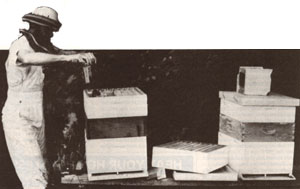
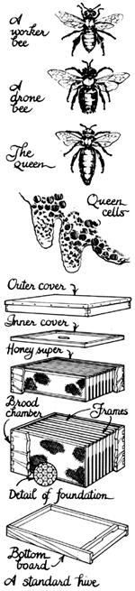
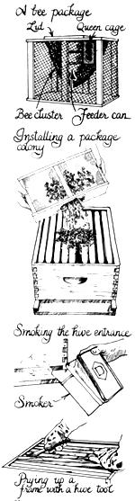
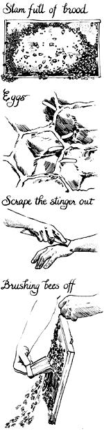
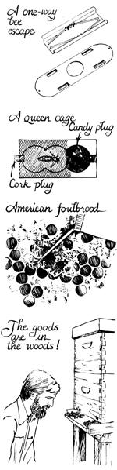

Homestead Handbook
Sheep, chickens, horses, pigs . . . if I could have only one kind of homestead livestock, I'd choose honeybees. You never have to muck out stalls of bee manure. You don't need to keep their water trough thawed in subfreezing weather. And - thank God - you don't have to get up in the dark every morning before even a rooster goes off and go out to pull on some bee udders. Members of Apis mellifera can clean themselves, fetch their own food and water, and store your harvest. They'll even patch their home's leaks!
The fact that honeybees practically take care of themselves is really only a small part of their appeal. Even the golden sweetener they provide (which, like every other homegrown product, is worlds better than its oversanitized store counterpart) isn't what makes them irresistible to me. The plain truth is I can no longer imagine my life without those creatures and the fascination and respect they engender. A honeybee colony is a mysterious and independent creation. Bees haven't been bred and rebred into docile egg machines or walking meat racks. They are as wild today as when they were first imported into this country. As a consequence, working with bees is a challenge (and lesson) in cooperation, not domination... a rare human-to-nature experience these days.
But enough rhapsodizing. If you now keep bees, you're probably already stricken with the obsession known as bee fever. I'm going to address myself here to those who might be considering beekeeping. If you're like I was a few years ago, the two things holding you back are ignorance and fear (nobody wants to get stung, right?). Well, I'll try my best to help you start dealing with both those factors. The books and the bees will teach you the rest.
Honeybees live in complex communities that may contain as many as 100,000 members. The vast majority of these are the unfertile females known as workers. And do they work. They run the hive . . . feed and clean the queen . . . gather nectar, pollen, and water (nectar gets converted into carbohydrate-rich honey; pollen is used as is for protein-rich "bee bread") . . . cool or heat the hive, as needed . . . feed developing larvae . . . and make the beeswax they use to build all the hive's cells. During the peak of the season, a worker will live only six weeks before she dies from exhaustion. She'll have gathered enough nectar to make 1/12 of a teaspoon of honey.
There are only a few hundred male, or drone, bees in a hive. They don't work a lick. They just eat honey, fly around, and look for an opportunity to mate. Such unions occur rarely . . . when a week-old queen goes on her mating flights high up in the air. It's then that the drones' distinctive large eyes and big wings come into play, for only the strongest males get to mate (passing on sperm that the queen can keep alive inside her for years!). . . and then fall to their - one hopes, blissful - deaths. The unsuccessful suitors meet their doom in autumn: No longer needed, they are forcibly evicted from the hive by - who else? - the workers.
At the heart of the hive is its queen, the sole female bee with fully developed reproductive organs. Indeed, all she is, is a royal egg layer; she has absolutely no decision-making authority. But what a layer! In the height of the season, she can produce 1,500 eggs - more than her own weight-in a single day.
The worker bees do treat her regally - they know the hive's existence depends on having a healthy queen - but as soon as she falters in her duties, they decide it's time for a replacement. They'll pick out a few cells with brand-new worker eggs, enlarge those cells to hold the bigger queen bees . . . and then feed the chosen eggs a diet consisting exclusively of royal jelly, a hormone- and protein-rich substance that miraculously makes female larvae develop into fertile adults. The workers will then dispose of the old queen.
All this bee sociology is as relevant as it is intriguing. Let's look at one of the "better beekeeping" conclusions that can be drawn from what you've just learned. If a single worker gathers only 1/12 of a teaspoon of honey in its entire lifetime, it must take a whole lot of bees to give you a harvestable crop. Ergo, the number one rule of productive beekeeping is to do everything you can to make sure your hive is packed full of bees right at the time when your area's good honeyflows are on (that is, when lots of nectar-bearing flowers that bees like are in bloom). The obvious but all-important fundamental for this? If you want a lot of bees in your hive, you'd better have a healthy, productive queen.
Hold on there a minute," you say. "Here you are telling me how to increase production when I don't even have a hive yet. I thought this article was supposed to be an introduction!" Sorry, I got carried away. I tell you, talking about honeybees is like that.
Back to basics, then. If you're going to keep bees, you'll need a home for them. The modern beehive was invented by Rev. L.L. Langstroth in 1851, and it was so simple and ingenious that it's hardly been changed since. Before Langstroth, most bee owners left their colonies in boxes, hollow logs, or straw skeps. Once a year, the owner gathered his or her harvest either by killing the bees and taking all their honey . . . or by brusquely ripping out a portion of the honeycomb (a procedure that didn't exactly please the hive's inhabitants).
Langstroth's hive design made nondestructive manipulation of the hive possible, because it incorporated two novel features: movable frames and uniform bee space. All the interior sections can be easily taken out and moved about. These pieces are all separated by 5/16 of an inch, the size of passageway honeybees naturally prefer, so the insects won't stick the hive parts together with extra comb or propolis (the tree-sap-derived "glue" they use for caulking jobs).
With a modern beehive, then, you can harvest honey, search for the queen, and even move bees and eggs from a strong colony to a weak one - without damaging the hive or angering the bees. Now, that's sweet!
Here's the layout. At the base is a bottom board, with a little landing pad extension out front. On the hive's top is an inner cover (a flat board with an oval opening) and an outer cover (the real lid). In the middle of the hive are open wood boxes called supers. The larger ones, called the deep supers or brood chamber, are stacked on the bottom and used for raising eggs and larvae (brood). The smaller ones, called the shallow supers or just plain supers , are used for storing honey. (Some beekeepers do use deep supers for honey. The only drawback is weight: Full of honey, a deep box weighs 60 pounds!)
Inside each super-deep or shallow-are ten frames . . . and each of these removable rectangles contains a thin sheet of beeswax that's been imprinted with little hexagons the size of worker bee cells. Such sheets, called foundation, give the bees ordered starting points for drawing out either egg or honey cells.
You can build your own bee equipment (other than the wax foundation), but don't . . . not when you're starting out. Buy it knocked down from a bee supply company and tack it all together (it's easy - even fun!). A one-hive starter setup, including the hive parts you'll need, smoker, hive tool, bee gloves, and hat and veil, will set you back around $90. Then you'll have most everything you'll need to get going, except for one thing . . . the bees.
How do you get bees? There're three ways. You might catch a wild spring swarm (a cluster of bees that have left their hive and are temporarily hanging from a tree or bush). Hiving a swarm is an exciting, glamorous beekeeping adventure consisting of setting an empty hive under the clustered bees and shaking them down into it. But most folks would find that a bit unnerving for their inaugural apicultural experience. (Psst: It's easier than it looks. Swarms, being homeless, are often quite docile.)
You might be able to buy an established hive from another beekeeper. This can be a good way to start out (it'll probably cost from $50 to $100) . . . but don't buy a colony that hasn't been formally inspected either by an apiarist from your state department of agriculture - it's free - or by someone you know who knows bees. I did once, only to learn later that the bees had American foulbrood, a contagious disease so dreaded I had to kill all the bees and burn out the equipment!
The most common and reliable way of starting out is to simply order your bees by mail. (That's right, the postal service ships bees!) A three-pound box of packaged bees will contain about 10,000 workers . . . one mated, ready-to-start-laying queen . . . and some sugar water to feed the small colony en route. (It'll set you back around $30.) And if you give the folks at your post office your phone number, they'll gladly call you when the shipment arrives so you can promptly pick the bees up.
Installing the little crate of bees in an empty hive is a simple operation that even a novice can handle. (I did it my first year . . . and, believe me, I was a novice!) Essentially - any beginning beekeeping book has all the details - the procedure involves setting the separately caged queen in your hive and then pouring the other bees over her by shaking them out of the crate like marbles! You won't get hurt (honest!) . . . the travel-weary bees don't have a home to defend and are flat-out discombobulated at this point, anyway.
A package colony will devote most of its energy during its first season to building up enough numbers and stores to last through the winter. So you probably won't get your own honey harvest from it until year number two. That's the disadvantage of starting with a package. One nice advantage, though, is that you get to learn with a less threatening number of bees. Your experience grows as the colony does.
Have some of you been reading this article impatiently . . . wondering when I was going to get around to the real meat of the matter: going out and facing 50,000 armed insects alone? If so, your wait is over. It's time to talk about working bees.
Well, almost time. First, let me squeeze in a word of advice. If you've never (or rarely) worked a colony of honeybees, go out for a time or three with someone who knows how to do it before you try it yourself. An experienced beekeeper can show you tricks of the trade that you'll never find in print. More important, that person will have the hard-earned poise that can help calm those anxious feelings you'll have... and will be able to show you how you're supposed to behave around bees.
So just this once, don't be self-reliant. Call up your local beekeeping society (your county extension agent can put you in touch) and find out the name of a competent hobby beekeeper who'd be willing to show you around his or her backyard apiary.
You'd also be smart to have an interested (and, yes, somewhat brave) friend accompany you the first few times you work a hive yourself. When the human-to-honeybee odds are 50,000 to 1, you can't help but be a little nervous... and if you're too nervous, your actions may irritate the bees. But somehow, if the odds are 50,000 to 2, you really will feel a whole lot more comfortable. I guess it just helps to have someone to talk to who doesn't buzz back.
OK, whether you're alone or with a friend, here's a thumbnail sketch of what you do. Remember, if you cooperate with those honey makers, you'll get back from most hive visits without so much as a single sting. So play the game on their terms:
[1] Visit the bees on a sunny day when nectar-bearing plants are in bloom. Most of the bees will be out working the flowers - and the rest will be too busy to worry about you.
[2] Wear white or light-colored clothing (not wool). Tuck your shirt into your pants and your pant legs into your socks. Wear a hat, bee veil, and gloves. Don't wear perfume or eau de barnyard (animal odors). And wash your beekeeping outfit : regularly. If you don't, the residual odor of any past bee stings will act as an attack alarm . . . and every time you visit, you'll get stung more!
[3] Use a smoker - a little firebox-and-bellows rig that's standard beekeeping equipment. You can start it up on crumpled newspaper and then run it on dry grass, baling twine, pine straw, wood shavings, or anything else that's convenient and nontoxic.
Later, as you get more experience and confidence, you may abandon some of those dictums. The day I first got up the nerve to shed my bee gloves was the last day I wore them. I found it a lot easier to work a hive smoothly bare-handed, so I got stung less without gloves than I did with them! Likewise, a good beekeeper can work most colonies in just about any weather.
But no matter how cocky you get, don't abandon that smoker. Smoke pacifies bees. They dive their heads into honey cells and start gobbling up honey. I don't know why . . . maybe the fumes make them think a forest fire's coming and they'd better load up for a long escape trip! But I do know that the one time I left that smoker behind I collected ten years' worth of stings at once!
OK, you're all suited up. Your smoker's lit and burning nicely (you might blow a few puffs on your hands and body to help deodorize yourself), and you're hiveward bound. Approach the colony from the side, so you don't get in the way of foraging bees. Put the tip of the smoker in the hive entrance and puff a few plumes. That'll cause a slight stir, but they'll soon calm down.
After a moment's wait, lift off the hive's outer cover and blow a little smoke down inside. Then, using your handy hive tool - a little crowbar that's an indispensible beekeeping aid - pry up the corners of the inner cover and lift that off.
There they are, beautiful and busy! Smoke them down in the super a bit, so you can pry out a frame and see what they're up to. To do that, gently pry up the two corners of an end frame with your hive tool and lift it out. Remember to move deliberately and carefully around bees, because quick, jerky movements are apt to excite them. Besides, you don't want to crush any of those winged honey makers.
Frames in upper supers will either be empty or contain honey, visible if uncured, and capped with lovely white beeswax if ready for harvesting. To really learn what's going on in the hive, though, you'll have to go below the honey super and into the brood chamber, where the queen lays her eggs. So, carefully reinsert that top frame you took out (smoking the bees a bit to clear the way). Then pry up the four corners of that super with your hive tool, twist the super a bit to break any remaining bee glue holding the supers together (don't forget the twist, please, unless you want to risk yanking still-stuck-on frames from below), lift the entire super off - it may be heavy - and set it down on your inverted outer cover.
Smoke the brood chamber. (You'll have to develop your own feel for how much smoke to use. The best general rule I've heard is when the bees start poking their heads back out between the frames, it's time to smoke them down again.) Pull out an end frame as you did before, hold it up, and inspect both sides. Then set it down on end, so you'll have more hive room to operate, push the next frame over with your hive tool, pull it out, and hold it up. Before long, if it's laying season and you have a good queen, you should find several frames that are "slam full of brood" . . . filled with large, oval patterns of brown-capped cells. If you've got a number of those larvae-laden frames, as well as some with open cells that - look real closely - contain little white slivers (eggs) in their bottom, you're in business. You've got a good queen who's doing her job. You can reverse your sequence of actions, close up the hive, and go home content.
You can, if you wish, find the queen by going through every frame in the brood chamber, one by one. Although it may seem impossible to spot that regal bee amongst a horde of thousands, you'd be surprised how she seems to jump out at you when you get the right frame. (She's the one with the enlarged, bright abdomen who's probably trying to scurry away.) As the old-timers in these parts say, "You'll know her when you see her." But if you're just doing a general health check on a colony, you don't really need to find her. Her laying pattern will tell you how things are.
Note: A lot of colony owners are reluctant to go down into brood chambers. (.They're the kind that leave the bees alone all year and timidly "rob" a super or two off the top at the end of the summer, hoping the boxes contain something.) They're called bee-havers. If you want to be able to help your colony, to control the quality of its queen, to increase honey harvests - in other words, to become a bee keeper - you're going to need to be willing to work that brood. So get down in there.
Oh - or rather, Ow! - suppose you do get stung. Don't jerk your hand back and drop the frame you had . . . that's asking for more trouble. Instead, slowly and carefully follow these "ancient beekeeping secrets": [1] Promptly scrape the stinger out with your fingernail or hive tool, and you'll get so little poison you may not swell a bit. If you try to grab it, you'll actually squeeze extra venom into your system. [2] Smoke the spot. A stinging bee releases a banana-scented pheromone to alert its comrades to attack the same area. (Folks who don't smoke their stings often wonder why more and more bees keep popping the same spot!)
See, that wasn't bad, was it? Admit it, actually you found the whole thing a bit thrilling! That's the first tingle of bee fever.
Questions and Answers
Let's take a moment to answer a few common beekeeping questions.
Where can you keep bees?
Anywhere enough nectar-bearing flowers grow. If other people are keeping bees in your area, you probably can, too. If no one is (unless you live in an untapped suburb or city), there's probably not enough forage available.
Where do you put colonies?
Many urban beekeepers put their hives on their rooftops, out of the way of pedestrians. People with hives in crowded neighborhoods keep them out of sight, preferably behind a bush or barrier so the insects will have to fly up a few feet to head out foraging. (Other hints for backyarders: Keep a gentle breed of bees . . . make sure they have a water source on your property... work hard to reduce swarming... and after your first harvest, take your neighbors some gifts of honey and explain to them how innocuous your bees have been.)
In a rural area, choose a site that has some ventilation (no muggy frost pockets, but no windy hilltops, either). Ideally, it should be exposed to the sun in the morning (to get the bees going) but shaded in the afternoon (so they can spend less energy cooling). Also, put your first hives where you can observe them often and easily - you'll learn and enjoy a lot more that way.
How much time does beekeeping take?
Once you know what you're doing, you can maintain a few healthy, established hives in just a few hours a year. (Or you can be smitten with a severe case of bee fever and spend every spare minute in your beeyard!) The busiest times are spring, when you try to make sure your hive is strong but not about to swarm, and harvest, which takes place at the end of your area's main honeyflows. Other than those, an occasional inspection or trip to add more supers should be just about all that's needed.
How do you harvest honey?
To get it away from the bees, you can just brush them off each frame you're after. (Try it - it works!) A soft, no-animal-hair brush - like an artist's drafting brush - is best.
At the hobby level, the best way to go is to set a bee escape (a dandy one-way exit that you can put in the oval hole of the inner cover) under the supers you want to harvest, go away for a day or two, and then come back to an almost completely bee-free harvest. (Two cautions: Tape any cracks above the escape, or other bees may well harvest the honey before you do. And bee escapes don't work well in real hot weather.)
Commercial beekeepers use blower guns or chemical repellants to evict bees from supers. Don't bother.
But how do you get the honey out of the frames?
Oh, that's what you were asking! There are two ways to do that: Either cut the honey out in comb chunks with a pocketknife or cut just the caps off all the sealed cells and spin the liquid honey out in a special centrifuge called a honey extractor. Extractors do increase yields because they leave the honey cells intact. But they also cost $170 and up: more than the rest of your start-up expenses put together! So don't start out with one. (MOTHER ran plans for an inexpensive homemade model in issue 68, page 170. I'll vouch that it works great, because I "retest" it every summer!)
Instead, just cut comb sections out with a sharp knife, and carve off thin slivers of those to spread on toast, biscuits, and pancakes. This is the most delicious way to enjoy honey. If you want some liquid-with-no-beeswax honey too, cut the comb out; "pop" all the cells with a kraut chopper, hand-held egg beater, or something similar; and set the squashings up in a sieve to drain out your harvest. Heat and cool the remaining glob in a double boiler, and it will separate into solid wax (which you can use or sell) and some additional honey.
Note: Since extracting puts stress on bee equipment, if you do want to extract you'll have to use special thick, wired foundation in your frames. On the other hand, since you want to be able to eat comb honey, you start that off on thin, nonwired foundation.
How much honey will you get?
If you're in a good beekeeping area, if the weather's great that year, and if your bees do well, you can get 100-200 pounds (30-60 gallons) or even more from one hive! Not me. Where I live - an area where woodland trees are the main nectar sources - my hives probably average 50 pounds each . . . which, by the way, is the national average. (That includes the really lousy year when I may not get any.) In most places, two hives - a good number to start with - should give you all the honey you can use and some extra to give away (or sell).
Can you make money from beekeeping?
Yes, some. Don't expect a full-time income. A commercial beekeeper owns at least 500 hives and drives them all over the place to pollinate crops.
But you can make some sideline money from bees. Say you sell your honey for about a dollar a pound. If you hit the national average, you'll earn $50 per hive (not counting expenses). Most beekeepers don't keep more than 20-25 hives in one yard (they may have several outyards on other people's property). So you may earn $1,000 or more from each beeyard. The more hives you have, though, the more investment and work will be required. And please, don't try to expand past a few hives until you've kept bees several years and have gotten over the first overenthusiastic flush of bee fever.
How do you prevent swarming?
Swarming - the departure of many or most of a colony's bees with the old queen, leaving behind the other bees and some new queen cells - can cripple a hive's honey production, but it's the way colonies per se reproduce. You can't prevent it. There are scores of intricate methods for reducing swarming. In essence, though, colonies that are overcrowded or have older queens are more likely to swarm. So give your colonies plenty of space in the spring. And consider requeening your hives every other year - it cuts swarming in half. (Requeening entails killing the old monarch and, a day later, installing a caged, new - probably mailordered - one. It's a bit tricky, but not too tricky.)
What if you have a really mean hive of bees?
It happens. Some colonies are more aggressive than others. Often, the meanest bees gather the biggest harvests, so you may choose to frown and bear it. If they bother you (or your neighbors) too much, you can solve the problem in one fell swoop . . . by requeening. A more docile queen will lay more docile eggs, and in six weeks you'll have an entire hive of more docile bees. The one hitch to this scheme is you'll have to work your way down through the brood chamber of your nasty colony so you can find the old queen and kill her. (Bundle up!)
What are some common beekeeping problems?
Pesticides. A lot of people lose bees because farmers or gardeners spray the flowers of crops that bees work. Educate your neighbors to spray only in the late afternoon (or not use pesticides on any blooms): What's good for your flying pollinators is good for the crops. (Sevin is a common bee killer; BT is safe.)
Diseases. There are a few honeybee ailments, the worst of which is American foulbrood. (Your bees have got this larval fungus if the hive smells foul and a matchstick poked into a brood cell comes out gooey, as if there were gum on it, instead of clean.) You have to destroy infested colonies - it's the law - to keep the disease from infecting other hives. To avoid the problem, buy only inspected, clean bees and equipment. There are some antibiotic preventives available, but don't use them unless you've had a prior foulbrood problem.
Winterkills. A good number of colonies starve each winter, primarily because their owners didn't leave enough honey in the hive to last until the following spring flows (not just until the end of winter: Lots of colonies starve each March). So don't get too greedy. Always leave plenty of honey - 30 to 90 pounds, depending on the length of your winter - for the bees. You'll save yourself a lot of sorrow or, at the least, time and hassle syrup-feeding your bees.
Allergy. Most people develop an immunity to bee venom after repeated periodic "exposure." (The sting itself still smarts.) A few go the other way and develop serious nonlocal reactions. If you become highly allergic to bee venom, you may be risking your life the next time you're stung. See an allergist for immunotherapy (it costs, but it works) or give up beekeeping.
That's all the information and opinions I can cram into one article. If you're game, get ahold of some of the listed resources, work a hive with somebody who knows how, buy a colony or two, and get cracking: Spring is the time to start!
I don't think you'll regret it. There's nothing like walking out to the yard on a late May afternoon and watching the bees on a bottom board (those on one side facing out, on the other facing in) fervently fanning air through the hive to drive the water out of their fresh, uncured honey. You stick your nose down near the exit side (the bees don't care), smell the unmatched aroma of honey in the making, and grin with tickled contentment . . . because, at last, the goods are in the woods.
I wouldn't give it up for anything.
EDITOR'S NOTE: The author made a 26-minute video cassette on introductory beekeeping called "Sweet Rewards" that was originally used in classes at MOTHER's Eco-Village. This tape won't tell you anything you can't read in this article, but it does show you quite a bit, including inspecting a hive, installing a package colony, and even shaking a swarm into a new hive. It's a good introductory film. If you'd like ordering information, write to Sweet Rewards, THE Mother Earth News, 105 Stoney Mountain Rd., Hendersonville, NC 28791.
A.I. Root (P.O. Box 706, Medina, OH 44256) and Dadant & Sons (Hamilton, IL 62341) are the two biggest bee supply companies. Each offers a catalog, some beginner's brochures, and a sample copy of its monthly magazine (Root publishes Gleanings in Bee Culture, and Dadant, American Bee Journal) free upon request.
You can shop around for a regional supply company by reading the ads in the beekeeping magazines. (My favorite is Walter T. Kelley, Clarkson, KY 42726.)
Root's beginner book, Starting Right With Bees, costs $2.13 postpaid from the company, while their large reference text, The ABC and XYZ of Bee Culture, is $14.89 postpaid. Dadant's entry-level book, First Lessons in Beekeeping, is $2.55 from the company, and their large reference text, The Hive and the Honeybee, costs $15.61 postpaid.
Richard Taylor has written three quite good books for hobbyists: The How-To-Do-It Book of Beekeeping (151 questions and answers)... The New Comb Honey Book (the one to have if you want to raise sellable comb honey) . . . and The Joys of Beekeeping (a poetical and philosophical - rather than practical - book). They are available for $8.95, $6.95, and $5.95, respectively, from Linden Books, Interlaken, NY 14847. Add 50 cents postage for each book ordered.
And Roger Morse's A Year in the Beeyard ($14.95 postpaid from Scribner's Book Co., Front and Brown Sts., Riverside, NJ
08075) is a good get-a feel for-beekeeping journal.
For classes, free literature, hive inspections, and beekeeping contacts, get in touch with your local or state beekeeping organization, the state department of agriculture, or your state's land grant or agricultural school.
|
 |
 |
 |
|
 |
 |
|